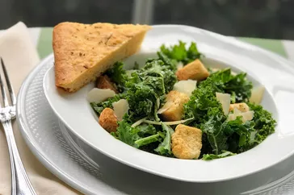

Kale Caeser Salad

Description
Traditional Caesar salad that uses kale instead of romaine! Makes 4 side-dish portions, but you can make it a main dish meal by topping it with a grilled protein, such as chicken or salmon! You may have leftover dressing, depending on how much you like. It keeps well in the refrigerator for up to a week.
Ingredients
- ½ cup mayonnaise
- 1 tablespoon freshly squeezed lemon juice
- 3 cloves garlic, minced
- 2 oil-packed anchovy fillets
- 1 teaspoon Dijon mustard
- 1 teaspoon Worcestershire sauce
- ½ teaspoon salt
- ¼ teaspoon ground black pepper
- 2 tablespoons freshly grated Parmigiano-Reggiano cheese (Optional)
- 1 bunch kale, ribs removed and leaves torn into pieces
- 1 cup Caesar salad croutons
- 2 tablespoons shaved Parmigiano-Reggiano cheese (Optional)
STEP 1
- Place mayonnaise, lemon juice, garlic, anchovies, Dijon mustard, Worcestershire sauce, salt, and pepper in the bowl of a food processor.
- Process until smooth.
- Set aside.
- Transfer to a small bowl and stir in grated Parmigiano-Reggiano cheese.
STEP 2
- Place kale in a large salad bowl.
- Using your hands, massage the kale to soften slightly.
- Add a few dollops of the dressing on top of the kale, and stir until all pieces are lightly coated with the dressing.
- Sprinkle with croutons and top with shaved Parmigiano-Reggiano cheese.